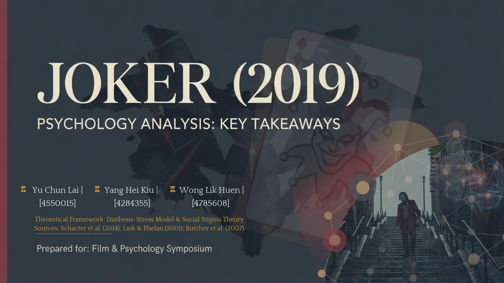
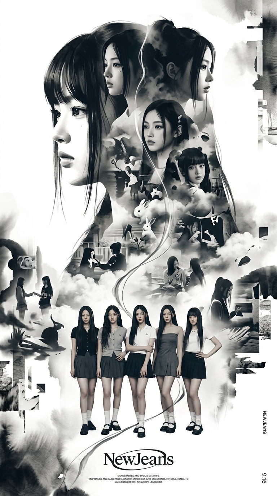

AI-Generated Presentation & Curriculum Structuring

Presentation.pptx (21 Slides) Uploaded
To display your slides directly on this screen with the click arrows: Open Presentation.pptx in PowerPoint $\rightarrow$ click File $\rightarrow$ Save As $\rightarrow$ PNG $\rightarrow$ select "All Slides" $\rightarrow$ save into assets/slides/.
1. Operational Pros, Cons & Hands-On Testing Evidence
To evaluate generative slide platforms for classroom instruction, I conducted direct comparative trials between Kimi AI and Google Gemini using the identical curriculum brief: "Synthesize a multi-slide pedagogical unit on Digital Ethics and Algorithmic Literacy for secondary students, balancing theoretical frameworks with active Socratic inquiry."
Kimi AI: High Modifiability vs. Severe Server Bottlenecks: Kimi AI excelled at generating coherent slide structures with relevant educational visuals and well-proportioned layout hierarchies. Crucially, Kimi exports slides with native, fully editable text and shape elements inside PowerPoint. This allows educators to adapt terminology, update discussion prompts, and personalize lesson pacing without friction. However, its primary operational limitation is server congestion: due to high concurrent user traffic, Kimi repeatedly throttles access, presenting severe queue delays and usage limit warnings that interrupt continuous lesson planning workflows.
Google Gemini: Visual Polish vs. The "Flattened Image" Obstacle: Google Gemini generated high-quality images and visually striking presentation aesthetics. However, an acute pedagogical drawback emerged upon inspecting the exported deck: Gemini renders the slides as flattened raster images embedded inside the .pptx container. Because the typography is baked directly into the image layer, instructors cannot highlight, reword, fix typos, or reformat slide text in PowerPoint. Correcting or customizing the content requires an inconvenient secondary workaround—importing the slide images into Canva or graphic design software to reconstruct text layers—introducing cumbersome multi-step friction that compromises the efficiency promise of generative AI.
2. Comparative Systems Analysis
| Criterion | Kimi AI (Selected) | Google Gemini | Gamma App |
|---|---|---|---|
| Text & Element Modifiability | Fully editable native text boxes, headings, and vectors directly inside PPTX | Generates slides as flattened images; text cannot be edited without third-party tools (e.g. Canva) | Fully editable online web presentation blocks |
| Visual & Image Quality | Well-integrated visual metaphors and contextual diagrams | Photorealistic visual rendering and strong aesthetic polish | Clean web-native cards with stock image pairing |
| Service Availability & Quota | Frequent capacity throttling due to peak concurrent user traffic | Highly consistent enterprise uptime via Google infrastructure | Stable freemium access tied to account credits |
| Teacher Workflow Efficiency | Fastest path to a customizable, classroom-ready PowerPoint | High friction if modifications are needed (requires Canva re-work) | Best for live web presentations rather than exported files |
3. Educational Implications & The Workflow Friction Problem
Classroom Utility vs. Editability: In educational contexts, a presentation is rarely a static one-size-fits-all artifact. Instructors must routinely differentiate content—simplifying terminology for emerging bilingual learners, adding extension questions for advanced cohorts, or revising examples to reflect local school realities. Kimi's native editability makes it fundamentally more viable for educational customization, whereas Gemini's flattened image approach creates a bottleneck that forces educators to perform extra graphic reconstruction in Canva.
The Infrastructure Dilemma: However, a tool's pedagogical utility is nullified if educators cannot rely on it during lesson preparation hours. Kimi’s recurrent capacity restrictions illustrate the fragility of relying on consumer-tier generative AI for institutional workflows. For AI presentation tools to become indispensable classroom aids, systems must combine Gemini's server resilience with Kimi's native component editability.
Synthetic Video Production & Creative Engagement
Google Flow: Viral Trending AI Fruit Animation
Creative stylized video generation benchmarked for accessible prompt iteration
1. Operational Pros, Cons & The Credit Economy Barrier
For the synthetic video investigation, I focused on creating the viral AI Fruit video series using Google Flow. My goal was to see whether creative, character-driven animation could serve as an engaging instructional hook for students.
To understand Google Flow’s strengths and limitations, I also experimented with Runway and HeyGen. While both platforms can produce high-quality videos, their credit systems made it difficult to test ideas freely, especially for students who need to make multiple revisions.
Google Flow
Google Flow was the most practical tool for making longer, stylized videos. It allowed me to experiment with different prompts and create the AI Fruit series without constantly worrying about losing credits after every generation.
The main limitation was that the generated videos were not always perfect. Some visual details, character movements, and timing issues were hard to correct after the video was created. For a formal instructional video, these flaws could reduce the overall quality because they would require additional editing or repeated generations.
However, these imperfections were not a major issue for brainrot-style videos. In fact, the unusual movements and exaggerated visuals added to the comedy and made the videos more entertaining. For this type of viral, humorous content, Google Flow was the best option because the flaws fit the style rather than taking away from it.
HeyGen
I previously used HeyGen Premium, and its video quality was noticeably strong. In the comparative showcase (Demo 2), HeyGen created realistic-looking avatars with natural facial expressions, posture, and fairly good lip synchronization. This makes it a strong choice for formal instructional videos, presentations, or professional announcements.
I think HeyGen Premium would work especially well for creating advertisements for TikTok or Instagram. The realistic avatar and decent lip-sync quality would help short promotional videos look more polished and believable.
The biggest problem is the credit usage. HeyGen uses credits quickly, so the free version is not very practical for repeated testing or ongoing classroom projects. The limited generation time and watermarks also make it difficult to create multiple videos without upgrading to Premium.
Credit Economy Barrier
The main difference between these platforms was not video quality, but how accessible they were for repeated experimentation. Google Flow was more forgiving for students who needed to adjust prompts, fix mistakes, or test different creative ideas. Runway and HeyGen, on the other hand, made it harder to learn through trial and error because a few failed generations could use up a large portion of the available credits.
Overall, Google Flow was best for the AI Fruit brainrot videos because it supported longer videos, allowed more experimentation, and its small imperfections added to the comedic style. HeyGen was better for polished, realistic avatar videos, but it is most useful with a Premium subscription because the free tier is too limited for continuous creative work.
2. Comparative Systems Analysis
| Feature | Google Flow (Selected) | HeyGen | PixVerse.ai & Runway |
|---|---|---|---|
| Free Tier & Credit Cost | Accessible generation flow without rapid credit exhaustion | Strict credit limits on free tier; requires paid Premium for real use | High credit consumption per second; prohibitive for free iteration |
| Visual & Animation Strengths | Strong stylized character generation (e.g. viral AI Fruit series) | Industry-leading photorealistic talking avatars and natural lip-sync | Cinematic diffusion text-to-video, high GPU rendering demand |
| Trial & Error Tolerance | High: Enables multiple prompt iterations without financial penalty | Low on free tier; high on Premium subscription | Very low: 1–2 generations deplete free starter credits |
| Classroom Educational Role | Creative hooks, animated storytelling, high student engagement | Formal instructional lectures and faculty announcements (if funded) | Experimental media arts and cinematic creative stimuli |
3. Pedagogical Application & The Digital Equity Dilemma
Viral Formats as Instructional Anchors: Leveraging viral internet formats—such as animated anthropomorphic AI Fruit characters—demonstrates the power of meeting digital-native students where their attention already lives. Rather than presenting abstract concepts through static text, animated character narratives generate immediate emotional curiosity and cognitive buy-in, particularly for K–12 and secondary learners.
The Digital Equity Cliff: However, the credit-gated business models of commercial AI video tools (such as Runway, PixVerse, and HeyGen) pose a serious threat to educational equity. When learning through AI requires continuous credit subscriptions, well-funded institutions and affluent students can afford to experiment and master these tools, while public schools and under-resourced students are locked out. Educational AI must prioritize accessible, open creation tiers to ensure that media literacy remains universally achievable.
Conversational AI & Verified Academic Retrieval
"Examine how Vygotsky's Zone of Proximal Development applies to digital tutoring environments, citing peer-reviewed literature published after 2022."
When mapped onto generative tutoring systems, the Zone of Proximal Development (ZPD) requires adaptive calibration:
- Dynamic Feedback Latency: Systems calibrate cognitive hint delays based on real-time student hesitation indices (Computers & Education, 2023).
- Cognitive Under-Exercise: Unchecked automated answers induce student passivity, narrowing independent problem-solving capacity (Journal of Educational Psychology, 2022).
1. Operational Pros, Cons & Mitigating Hallucination
The central dilemma in conversational AI for higher education is the phenomenon of authoritative hallucination—where models synthesize non-existent literature with convincing grammatical fluency. In comparative testing, standard conversational engines invented plausible-sounding historical education policies when queried about 19th-century educational reforms.
Perplexity's Decisive Affordance: Perplexity AI addresses this risk by indexing live scholarly databases and appending verifiable hyperlinks to every factual claim. This allows student researchers to inspect the underlying source document before integrating assertions into their scholarship.
Affective Limitations: However, Perplexity operates strictly as an informational indexer. When tested with inquiries reflecting student anxiety or emotional distress, it yielded dry taxonomic definitions rather than pedagogical encouragement. It functions as a research tool, but cannot provide social-emotional mentorship.
2. Comparative Chatbot Typology
| System | Factual Attribution | Conversational Persona | Educational Role |
|---|---|---|---|
| Perplexity AI | Live web indexing with explicit URL citations | Concise, objective, encyclopedic | Fact-checking, academic synthesis, literature discovery |
| ChatGPT (GPT-4o) | Generates fluent responses; variable factual grounding | Highly empathetic, adaptable, dialectic | Brainstorming, draft structuring, exploratory dialogue |
| Replika | No factual verification architecture | Emotionally expressive, relational companion | Casual conversational language practice only |
3. Cultural Context & Classroom Inquiry Dynamics
Overcoming Questioning Hesitation: In traditional educational environments—particularly evident in Korean classroom settings—students frequently refrain from asking clarifying questions during lectures to avoid public embarrassment or peer judgment. A cited conversational assistant provides a private, non-judgmental laboratory where students can interrogate complex concepts repeatedly until true comprehension is attained.
Epistemic Dependency: The countervailing risk is the attrition of deep analytical endurance. If students consistently outsource document synthesis to AI summary engines, their capacity to read dense academic treatises independently deteriorates. Institutions must position AI search as an indexing scaffold rather than an intellectual substitute.
Visual Scaffolding & Prompt-Generated Instructional Media
"High school biology classroom with holographic anatomy models and diverse students."
Uncanny anatomical rendering of hands, chaotic specular reflections obscuring pedagogical focus.

"Minimalist isometric vector diagram of modern science laboratory, precise spatial hierarchy."
Clean vector lines eliminated biometric artifacts; spatial relationships rendered with high clarity for instructional posters.
1. Operational Pros, Cons & Prompt Engineering Analysis
Visual scaffolding provides essential support for learners grappling with abstract or spatial phenomena. In evaluating generative image synthesis for educational curriculum materials, I tested the generation of conceptual diagrams and historical reconstructions.
Pedagogical Metaphor Generation: Generative models excel at materializing novel conceptual analogies on demand. For lessons addressing "algorithmic echo chambers," rather than relying on stale stock photography of mobile phones, refined prompts generated metaphorical visualizations of learners within reflective glass prisms—producing an engaging catalyst for classroom discussion.
Typographic and Schematic Failure Modes: However, current diffusion models continue to fail at exact typographic labeling. When instructed to generate labeled biological cross-sections, models routinely produce pseudo-alphabetic gibberish. As a result, educational visual design requires pairing generative image synthesis with vector design software for factual typography.
2. Comparative Model Architecture
| Model | Semantic Prompt Fidelity | Labeling Capability | Educational Suitability |
|---|---|---|---|
| Custom Tool Selection | Balanced for classroom metaphor and clear visual hierarchy | Requires post-generation vector typography | Instructional conceptual posters and handouts |
| Midjourney v6 | High artistic quality; occasionally overrides spatial parameters | Renders brief titles; struggles with complex labels | Creative writing stimuli and narrative world-building |
| DALL·E 3 | Superior semantic understanding of complex multi-part prompts | Reliable short-phrase rendering | Rapid conceptual diagrams and slide illustrations |
3. Inclusivity Potential & Algorithmic Stereotyping
Curricular Representation: Generative image tools allow educators to address historic representational gaps in textbooks—such as generating historical reconstructions of underrepresented scholars whose contributions were neglected in legacy archives.
Bias Reproduction: When unconstrained, diffusion models routinely reinforce stereotypical demographic associations embedded in training data. Educators must actively instruct students in critical visual literacy, analyzing how algorithms reflect systemic societal biases.
Integrative Pedagogical Synthesis & Critical Discourse
"Generative artificial intelligence does not threaten critical inquiry by automating clerical effort; it elevates critical inquiry by eliminating the traditional refuge of superficial busywork."
1. The Educator as Curator: Transition from Production to Discernment
Across all four investigated modalities—curriculum generators (Kimi/Gemini), automated video assemblers (Google Vids), verified research assistants (Perplexity), and generative visuals—a consistent pedagogical reality emerges: AI diminishes mechanical friction while expanding evaluative responsibility.
Traditionally, academic grading frequently assessed clerical compliance: the formatting of slides, the splicing of media tracks, or the manual compiling of reference citations. Because generative systems can synthesize these outputs in seconds, the educational emphasis shifts decisively toward the rigor of the underlying prompt, the diligence of factual verification, and the ethical curation of materials.
2. Preserving the Socratic Heart in Algorithmic Classrooms
An essential observation from our conversational trials is that genuine learning is deeply relational. While verified retrieval engines like Perplexity provide an indispensable sanctuary for self-paced, judgment-free inquiry, they cannot reproduce the collective deliberation that occurs when students grapple with competing ethical perspectives in a live classroom.
The true hazard in educational AI adoption is not algorithmic hallucination, but cognitive surrender. Just as muscular development requires lifting actual resistance rather than observing an automated apparatus lift it, intellectual endurance demands wrestling with dense primary sources, synthesizing conflicting viewpoints, and defending original convictions.
3. Strategic Verdict: Cognitive Scaffolds, Not Intellectual Proxies
Generative AI tools must be instituted strictly as cognitive scaffolds rather than intellectual proxies. When deployed judiciously, they unburden educators from administrative fatigue so they can mentor with empathy, and they empower students to formulate inquiries boldly while remaining anchored in empirical scholarship. When human agency retains command of narrative purpose, critical judgment, and ethical deliberation, generative AI becomes a profound catalyst for educational excellence.